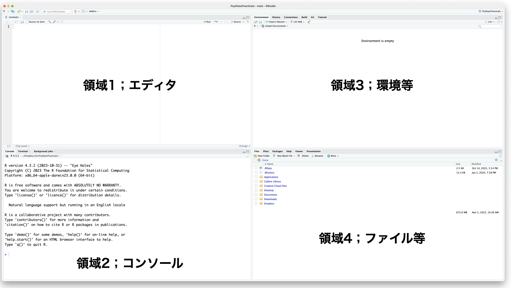
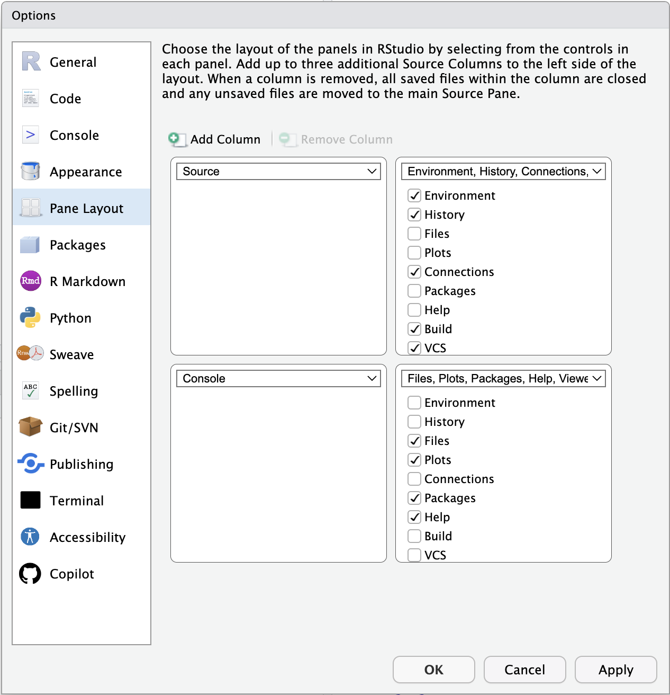

1 Let’s Start with R/RStudio
The letter “R” poses a challenge in searches due to its association with a statistical programming language. This language is extensively utilized in statistical analysis, including fields like psychology. Being open-source, it’s freely accessible to everyone. The term “free” implies a lack of guarantee, but it doesn’t necessarily mean poor quality. While being paid may ensure quality assurance to some extent, if one were to ask whether paying guarantees a scientifically correct answer, the answer is clearly no. It’s essential to support both scientific inquiry and open-source software, recognizing them as shared resources for humanity.
In Japan, R is active in community activities, and voluntary study groups made up of R users are being held in various parts of Japan, centered on Tokyo.R[^1.1]. Like how R itself is published through the Internet, various materials from introduction to application can be utilized online. The following explains from the introduction, but as it is frequently updated, we suggest that you search as needed and select and use information that is as close as possible to the timeline.
[^1.1] As of January 2024, there are local communities not only in Tokyo but also in Fukuoka, Sapporo, Yamaguchi, Iruma, etc., where all participants are enjoying themselves.
1.1 Preparation of the Environment
1.1.1 Installing R
There are online materials available that are beginner-friendly for installing R.
R is published on a network known as the Comprehensive R Archive Network (CRAN). On the CRAN homepage, there are download links available. Download the latest version that suits your platform[^1.3].
[^1.3] If you’ve installed R on your own PC for this class and more than half a year has passed before you use it again, it’s better to start by checking for the latest version, uninstalling the old version if it’s updated, and installing the latest one. Some packages used in R may only be compatible with the new version. Like tatami mats, newer is better in R.
1.1.2 Installation of RStudio
Once the installation of R is complete, let’s proceed to install RStudio. RStudio is what is known as an integrated development environment (IDE). R on its own has the analytical capabilities to handle specialist usage, such as statistical analysis and function plotting. Its essence, of course, is the computation function; it provides the necessary responses when given command statements (scripts) to execute calculations. Even if the essence of analysis is the computation function, actual analytical activities include various peripheral activities related to analysis, such as drafting and finalizing scripts, generating and managing input/output data and drawing files, and managing packages (explained below). To put it in metaphorical terms, even if the essence of cooking is processing with a knife, cutting board, and stove, the actual preparation process goes more smoothly if there are convenient cooking utilities, such as a spacious cooking space, a convenient sink, and support cooking utensils like bowls and containers. In a way, doing analysis in R alone is like cooking with a simple and wild method like a mess tin, and RStudio is something that provides an overall cooking environment.
As said over and over again, it is essentially possible to work on a single R. If you want to maintain as simple an environment as possible, it is not denied to use a single R, but since RStudio is also useful as an editor and document creation software, we will assume the use of RStudio in this class[^1.4].
[^1.4] You can utilize R within editors like VSCode, and you can even integrate the R calculation engine into Jupyter Notebook. Lately, there’s been a trend towards offering analytical software as integrated environments rather than standalone setups. For instance, you can access the R engine via platforms like Google Colaboratory. It’s possible that the practice of setting up individual environments on local PCs might soon become outdated.
1.2 Basics of RStudio (Four Panes)
Assuming you are ready to use R and RStudio at this point.
Now, when you launch RStudio, a screen divided into four major areas appears. These areas are called panes. There may be times when ‘Area 1’ in the figure does not appear, but this is only because the pane below is maximized and collapsed, so it will likely appear if you operate the size change button on the top of the pane.

The layout of this pane can also be changed from Tools > Global Options… > Pane Layout in the menu. While it is basically four divisions, it is a good idea to change the layout to a position that is easy for you to use.

1.2.1 Area 1: Editor Pane
Editor area. This pane is basically what you write in when inputting R scripts, report text, etc. As you can see from File > New File, the types of files you can work with here are not only R language, but also C language, Python language scripts, markup languages such as Rmd, md, Qmd, HTML, and special languages such as Stan and SQL. Be sure to check the bottom-right corner of the pane to see the type of file currently open.
Let’s explain with an example of writing a script in R language. R is an interpreter that executes commands sequentially, and you use it to send the R code described here to the console to execute calculations with the Run button in the upper right. We call a single command a command, and the entire stack of commands a script or program. If you want to execute multiple commands, select multiple lines in the edit area and press the Run button. If you want to execute the entire script file, press Source next to the Run button. CTRL+Enter (Command+Enter on a Mac) acts as a shortcut for the Run button.
1.2.2 Area 2: Console Pane.
If you are using R alone, this pane is what you will use. In other words, what is shown here is the main body of R, or rather the computing function of R itself. The place where the “>” symbol is displayed is called a prompt, and R is waiting for input when the prompt is displayed.
R performs calculations sequentially, so if you enter a command when the prompt is on, the calculation result will be returned. It’s fine to write commands directly here, but there may be typos, and it’s more common for commands to span multiple lines, so it’s better to plan on transcribing them in the editor area. Occasionally, when there’s something you want to check temporarily, it’s a good idea to touch the console directly.
Additionally, if you want to clean the console, it is good to press the broom button on the top right.
1.2.3 Area 3: Environment Pane
Basically, this pane and the next area 4 pane contain multiple tabs. You can also customize which tabs to include in which pane in the Pane Layout to your liking. Here we will only mention about the typical two tabs.
The Environment tab exhibits variables and functions currently stored in the R execution memory. These are collectively termed as “objects”, and you can inspect their contents and structure through the GUI here.
The History tab serves as a log, capturing all commands sent to the console in chronological order. Additionally, from the History tab, you can also dispatch commands to the editor and console, which proves handy when you wish to rerun a specific command.
1.2.4 Area 4: File Pane
Only the main tabs will be described here.
The Files tab functions as a file management interface, akin to Finder on Mac or Explorer on Windows. It allows for tasks like creating folders, deleting files, renaming, copying, and more.
The Plot tab exhibits the output of drawing commands in R. One notable advantage of RStudio is the ability to export figures from this Plot tab to a file, with options to specify file size and format.
The Packages tab presents a list of installed packages, including both loaded and stored ones. This tab offers options to install new packages and update existing ones with a single click. Detailed discussions on packages will follow later.
The Help tab serves as a space to display results when accessing help for R commands (using the help function). By utilizing help, users can access information on function arguments, return values, usage examples, and more.
1.2.5 Additional Tabs
Let me briefly explain some optional tabs with adjustable display settings.
The Connections tab comes into play when linking R with an external database, for example. It’s handy for tasks like selectively extracting necessary tables using SQL without having to import all the large-scale data locally.
The Git tab is utilized for managing versions of R, particularly within R projects (which we’ll cover later). Git serves as a version control system, allowing multiple programmers to collaborate on software development concurrently. By recording chronological differences, it can even serve as a record similar to a lab notebook when creating reports.
The Build tab is accessed when creating R packages or websites. This document, for instance, was generated using RStudio, and the Build tab is used for converting manuscripts into HTML or PDF formats.
The Tutorial tab provides a guided tour for tutorials.
The Viewer tab allows for viewing HTML, PDF, and other file types created in RStudio.
The Presentation tab is dedicated to viewing presentations made within RStudio.
The Terminal tab functions as a terminal, akin to those in Windows/Mac or Linux. It’s used for issuing commands directly to the operating system via the command line, not restricted to R commands.
The Background Jobs tab, as the name suggests, is for executing tasks in the background. While R typically runs calculations on a single core, using this tab to run script files in the background enables parallel operations.
1.3 R’s Package
R is capable of conducting basic analyses like linear models by itself, but for more advanced statistical models, specialized packages are necessary. Packages consist of groups of functions and are available online through platforms like CRAN and Github. As of January 18, 2024, there are a whopping 344,607 packages accessible on CRAN alone[^1.5], with many others available on Github[^1.6] and various platforms outside of CRAN.
[^1.5] As of January 18, 2024
[^1.6] Git is a version control system, and Github is a platform for managing these versions on a server (repository) over the Internet. RStudio integrates with Github, facilitating seamless version control by connecting projects with Github. Additionally, packages can be published on Github, allowing for immediate sharing without waiting for CRAN’s review. Consequently, Github, with its quick publishing process, has become a preferred option in recent times.
To use a package in R, you first need to install the package to your local system. After it’s installed, you must load the package in each R session where you want to use it by calling the library function. Once a package is installed locally, there’s no need to reinstall it for every new session.
While you can install packages using R commands, using the Packages pane in RStudio might be easier for some users. Below is a list of well-known and useful packages, each with a short description. Since some of these packages will be used in our lecture, it’s advisable to install them in advance.
tidyverse package (Wickham et al. 2019): R has become significantly more user-friendly since the introduction of the tidyverse package. Developed by Hadley Wickham, who is highly respected in the R community, this package has had a significant impact on the industry. It comprises a collection of packages aimed at organizing data efficiently. Although it doesn’t offer statistical analysis models, it provides useful functions for data preprocessing[^1.7]. Installing this package automatically fetches related dependency packages, which may take some time.
psych package (Revelle 2021): True to its name, this package includes numerous statistical models relevant to psychological statistics. Particularly noteworthy are the special correlation coefficients and factor analysis models it offers. It’s highly recommended to install this package.
GPArotation package (Bernaards and Jennrich 2005): This package is utilized for factor axis rotation in factor analysis.
styler package: A tool for ensuring code conformity. Handy for refining script drafts.
lavaan package (Rosseel 2012): Specifically designed for analyzing models involving latent variables (Latent Variable Analysis), lavaan is indispensable for Structural Equation Modeling (SEM) and covariance structure analysis.
ctv package(Zeileis 2005): Abbreviated for CRAN Task Views, this package assists in discovering relevant packages within the extensive CRAN repository. It conveniently groups and installs packages related to specific domains. For example, after installing this package, executing
install.views("Psychometrics")will sequentially install numerous packages pertinent to psychometrics.cmdstanr package (Gabry, Češnovar, and Johnson 2023): This package facilitates the utilization of the probabilistic programming language Stan, employed in complex statistical models, directly from R. Prior to using this package, setting up Stan and the compilation environment is necessary; please refer to the official introduction site for further details.
Absolutely, a substantial portion of statistical data analysis focuses on “preprocessing,” which entails preparing data in a suitable format for analysis. The effectiveness, speed, and user-friendliness of preprocessing, also referred to as data handling, greatly influence the outcome of subsequent analysis. Thus, the introduction of the tidyverse package has been warmly welcomed. This package has streamlined data handling tasks, enhancing accessibility and efficiency. The specialized Japanese book by 松村 et al. (2021) on data handling using the tidyverse package has proven to be exceptionally valuable in this context. Undoubtedly, there are also numerous excellent books on preprocessing written in English!
1.4 RStudio Projects
Before we actually start using R, let’s explain about Projects in RStudio as a final preparation.
You might also use a PC to create and store documents, often putting them together in a folder. Folders are usually organized hierarchically, for example, “Documents” > “Psychology” > “Psychology Statistics Workshop”. By doing so, you can quickly access the necessary files.
Conversely, if you do not manage folders in this way, files will be scattered throughout your PC, and you may have to search the contents of your PC each time you need information.
The same applies to practical analysis using R/RStudio, where each theme involves multiple files (such as script files, data files, image files, report and other document files, etc.), and these are managed in folders according to the scene (such as “classes”, “graduation thesis”, etc.).
Furthermore, there is a concept called a working directory in the PC environment[^1.8]. For example, when you’re launching and running R/RStudio, it indicates where R is currently being executed and where it is managed. If, for instance, there’s a file called sample.csv in this working directory and you want to import it from the script, you can simply write the file name. However, if the file is saved somewhere else, you need to either provide instructions that include the position relative to the working directory (relative path), or you need to provide instructions that include the absolute path from the perspective of the entire PC environment. The difference between relative and absolute paths can be thought of as the difference between giving directions like “two corners from here, turn right” and giving an address.
At any rate, you always have to keep an eye on where this work folder is set up when you’re running. Please note that this working folder is not necessarily the same one that’s open on the Files tab of the RStudio file pane. Just because you’ve opened it in Explorer/Finder on the GUI, does not mean that the working folder automatically switches.
This is a project in RStudio. RStudio has a concept of “project”, where you can manage things like work folders and environment settings. When you start a new project, you go to File > New Project, and when you already have a created project, you open the project file (a file with the .proj extension) through File > Open Project. Then, the working directory is set to that folder. If you link the project to Git, you can also perform version control on a per-folder basis.
From now on, please note that when referring to external files in this lecture, we will discuss them as if they are inside the project folder (in a form that does not require a path).
[^1.8] In this context, folders and directories can be considered synonymous. Typically, the term “directory” is favored in Command Line Interface (CUI), while “folder” is preferred in Graphical User Interface (GUI). Derived from the root word “direct,” a directory underscores a specific location such as a file or access destination, whereas a folder encompasses a collection of files and other items. The term “folder” is generally easier to grasp.
1.5 Assignment
- Please download the latest version of R from CRAN and install it on your PC.
- Please download the desktop version of RStudio from Posit’s website and install it on your PC.
- Launch RStido and try rearranging the pane layout from the default state. It might also be good to set the source pane to three columns.
- Please try to erase all the characters written in the console pane.
- Please try opening various folders using the Files tab in the file pane, deleting unnecessary files, and changing file names.
- Open the Files tab in the file pane, and select and run ‘Go To Working Directory’ from ‘More’. Did anything happen?
- Please create a new project for this class. The project can be a new folder or an existing folder, it doesn’t matter.
- When you have a project open, the name of the project should be displayed somewhere in the RStudio window or tab. Please check.
- Please perform various file operations from the Files tab in the file pane, and then do
Go To Working Directoryagain. If you can get back into the project folder, you have succeeded. - Open a new R script file, it’s fine as blank, please save it with a filename.
- Please exit or minimize RStudio, and navigate to the project folder from the OS Explorer/Finder. Please confirm that the file you just created is saved there.
- In the project folder, there should be a file named project name +
.proj. Please open this and open the RStudio project. - Please close the project from File > Close Project in RStudio. Check what has changed in the details of the screen.
- Please exit RStudio and then restart it. You can start it either from the project file or from the application. After starting, please open the project (or make sure the project is open).